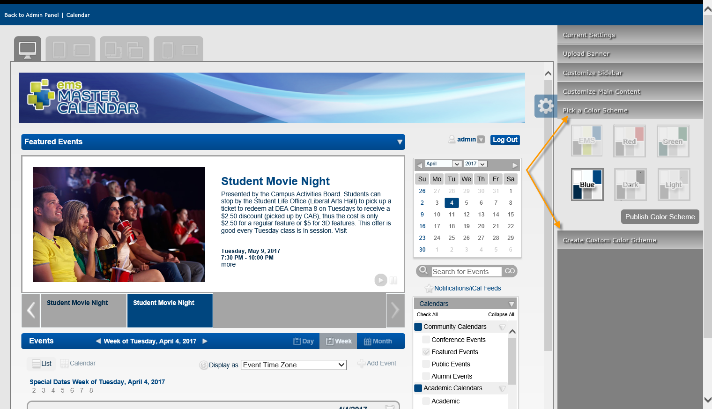
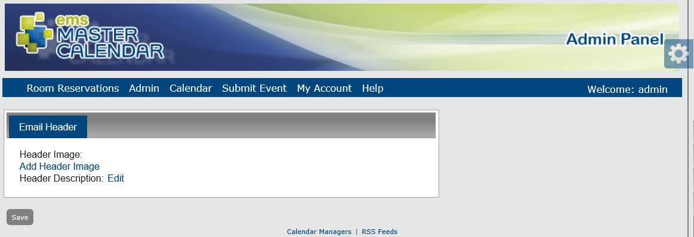

Customizing Your Master Calendar Site and Automated Emails
Settings are available for customizing the appearance of your Master Calendar site, including the automated emails that are sent from many areas within Master Calendar, including subscriptions, reminders, and change notifications.
This topic will provide information on:
Customizing Themes, Colors, Site Banners, and Event Icons For Your Master Calendar Site
Concept:The theme determines the background color for calendars and section headers on pages in Master Calendar.
- On the Admin panel, point to Site Administration, and then click Theme Roller.

- Themes show in the upper left corner of the application. Click the Settings icon on the right for a list of options for customizing your application's appearance.

- Click the theme you prefer in the upper left. Use the menu on the right to customize additional visual elements of the application.
Tips: You can Pick a Color Scheme or Create Custom Color Scheme by expanding the menus on the right.
- You can upload your organization's custom site banner, which displays at the top of every page on your Master Calendar site, by expanding the Upload Banner menu.

- To change event icons, navigate back to the Admin panel and select Admin > Configuration > Event Icons.

- You can select items to Edit or Delete, or Add a new icon.
Customizing Headers for Automated Emails
Automated emails can be sent from many areas within your Master Calendar application, including subscriptions, reminders, and change notifications. You can configure a customized email header for these automated emails, and you can also select a logo for these automated emails that is displayed in the upper right hand corner of the automated emails.
- On the Admin panel, point to Site Administration > Email Header.

- On the page that displays, you can Add Header Image or Edit the header description.

Note: The new logo must be an image in one of the following formats —.jpg, .gif, .png, .bmp, and .ico.
- Click Save.
Customize Email Text
Customize text for your automated emails from the Admin Panel.
- Navigate to Site Administration > Default Settings.

- From the Default Settings screen, manually navigate to the EmailText.aspx area.
- To do this, append the Master Calendar URL.
- Highlight the suffix of the URL that is displayed and replace the last section with /emailtext.aspx (e.g.,http://rgts01/MasterCalendarV8/emailtext.aspx).
- A page opens, allowing you to change the email text for the sections that are described.

- Click Save.